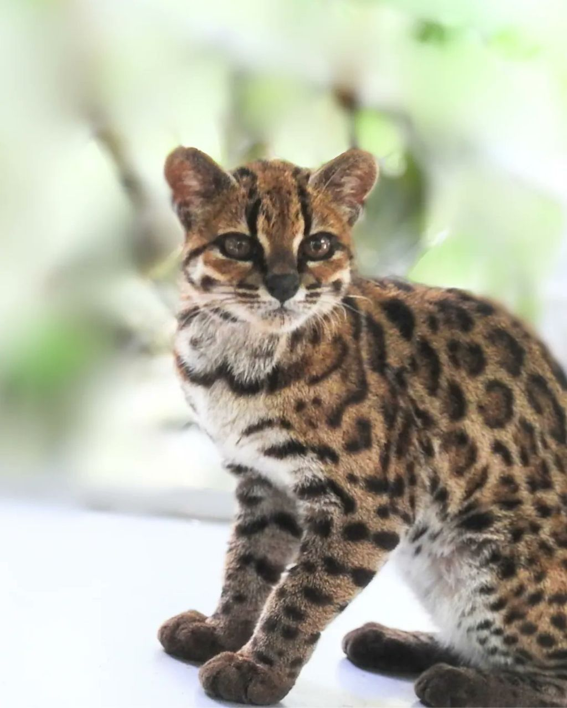
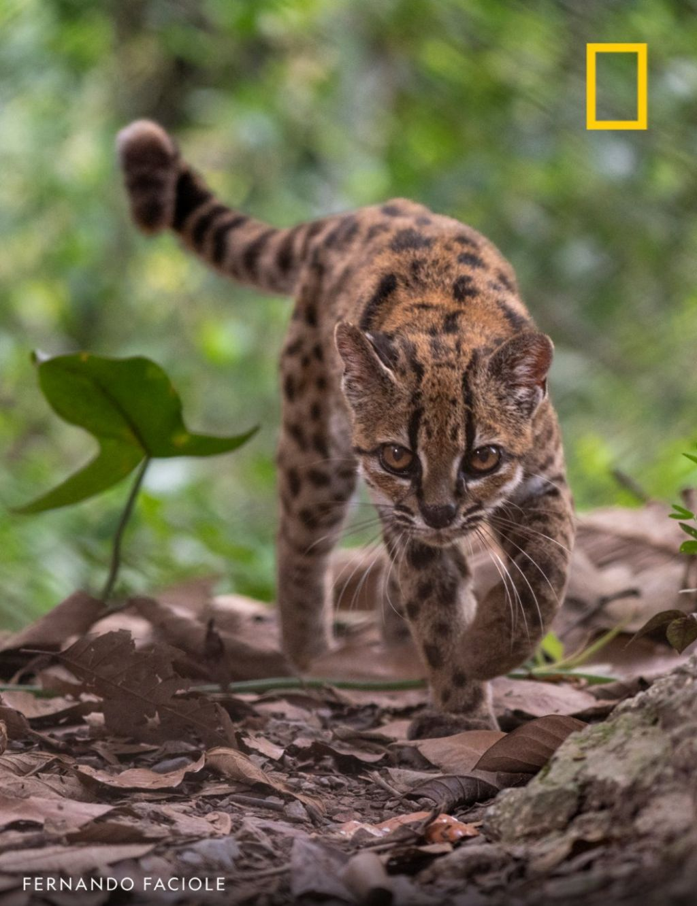

https://cafe.daum.net/dotax/Elgq/4806765?svc=cafeapi


일반적인 집고양이보다 작으며
볼리비아 융가스 운무림에 서식하는 것으로 알려졌다.
현지인들이 부르는 이름을 따서 ‘틸카요’라고 부른다.
틸카요는 중남미 전역에 서식하는
타이거캣과 생김새가 비슷하나
DNA 연구 결과 독자적인 종으로 밝혀졌다.
https://cafe.daum.net/dotax/Elgq/4806765?svc=cafeapi


일반적인 집고양이보다 작으며
볼리비아 융가스 운무림에 서식하는 것으로 알려졌다.
현지인들이 부르는 이름을 따서 ‘틸카요’라고 부른다.
틸카요는 중남미 전역에 서식하는
타이거캣과 생김새가 비슷하나
DNA 연구 결과 독자적인 종으로 밝혀졌다.
남미칡
튈카요?
우리가 농담처럼 칡이라 하는데 사실 예전엔 호랑이를 진짜로 칡범으로 불렀음
무늬가 칡넝쿨 같다 해서
농담아닌데~
거기아닌데~
야생 애옹이들은 좀 똘똘한가

ㄱㅇㅇ
탈까요?
칡 아님?
털ㅋㅋ
ㅗㅜㅑ 발봐라 개미쳤네
어원이 궁금하네
현지인들도 잘 모른다고 하던데
후손은 없겠네 쟤 한 마리면
나는 고양이의 종류를 100가지 말할 수 있다
아이마라어 원어민들은 문자 그대로 '작은 발'을 뜻하는 표현(t'ili kayu)에서 유래했을 가능성이 높다고 제안.. .
일반적인 분양이나 매매가 불가능하여 공식적인 '구매 비용'이나 '몸값'은 존재하지 않습니다. 😭
귀욥자나?
귀여운데 앙칼지게 생겼네
왐마 니기럴거 내 이런건 처음봤다 틸카요
이제 곧 한국에서 어렵게 데려왔어요 하면서 동물농장이든 유튜브에서 막 나오겠네
야마피카랴!
지구온라인 신규펫 업데이트 했네
사진이 두장 뿐인가
귀여움
치타같기도 하네
튈까요?
왜 볼리베어로 봤지
칡 처럼 생겼네